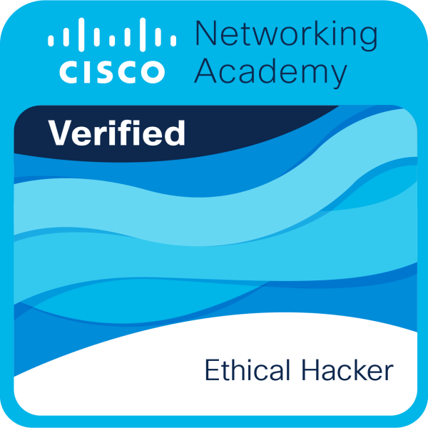
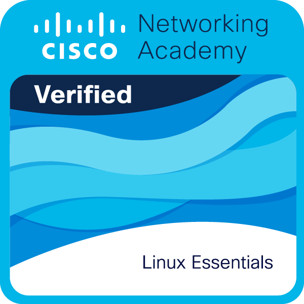

¡Hola! 👋 Soy Antonio
Técnico Superior en Administración de Sistemas Informáticos en Red (ASIR) y Técnico en Sistemas Microinformáticos y Redes.
Próximamente comienzo el Curso de Especialización en Ciberseguridad en Entornos de las Tecnologías de la Información.
Apasionado por la tecnología, la administración de sistemas y el aprendizaje continuo para afrontar nuevos retos. Y en continuo aprendizaje.
🛠️ Habilidades Técnicas
Sistemas Operativos
Redes
Seguridad
Virtualización
Bases de Datos
Scripting
📚 Actualmente Aprendiendo
Grado Especialización en Ciberseguridad en Entornos de las Tecnologías de la Información
Idiomas
Español🇪🇸
Nativo
Inglés🇬🇧
B1 (Certificado Cambridge)
Formación Académica
Grado Medio de Sistemas Microinformáticos y Redes
IES Sierra de Gádor (Berja)
2022 - 2024Grado Superior de Administración de Sistemas Informáticos en Red *Primer año*
IES Al-Andalus (Almería)
2024 - 2025Grado Superior de Administración de Sistemas Informáticos en Red *Segundo año*
IES Aguadulce (Roquetas de Mar)
2025 - 2026Grado Especialización en Ciberseguridad en Entornos de las Tecnologías de la Información
IES Aguadulce (Roquetas de Mar)
2026 - PRESENTEPrácticas en Empresa
Diputación de Almería
Marzo 2026 - Junio 2026 · 3 meses
Diputación de Almería
Mayo 2025 - Junio 2025 · 3 semanas
Becario
Quantasoft · Contrato de prácticas
Marzo 2024 - Junio 2024 · 4 meses
Prácticas Erasmus en República Checa (Praga), presenciales, con certificado Europass.
Certificados y Cursos

Hacker ético
2026
CCNA: Introducción a las redes
2025
Fundamentos de Linux
2025